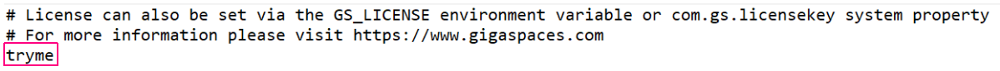
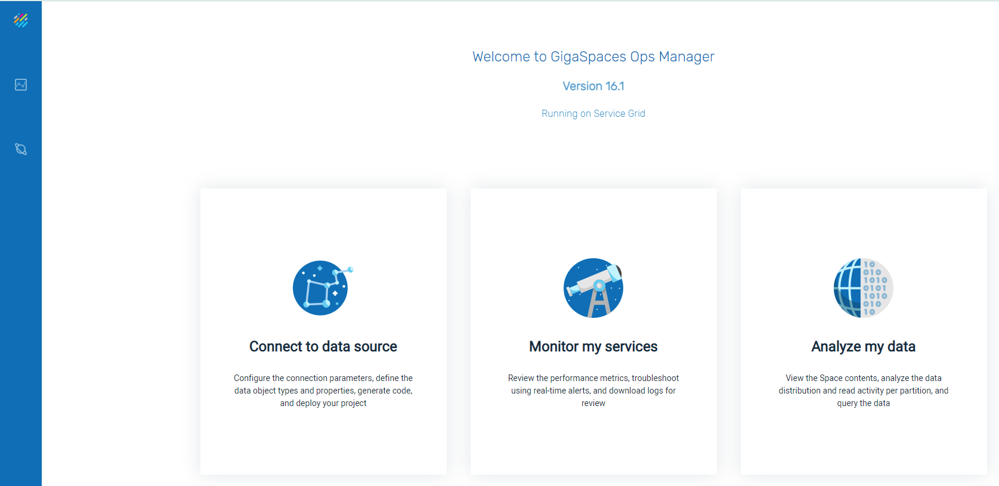
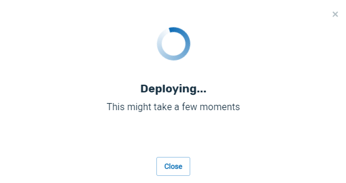
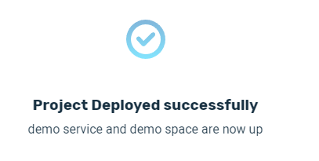

This topic is a hands/on introduction to GigaSpaces SmartCache.
SmartCache is a high-performance, highly configurable caching mechanism that speeds up your application processing. Data is brought into the GigaSpaces in-memory grid, where it can be accessed at extreme speed.
In this topic we will present three examples of using SmartCache:
Load a database table into the GigaSpaces grid and perform SQL operations.
Port a standard Java data base application to the GigaSpaces grid.
Use the index feature of GigaSpaces to optimize the performance of an application.
Download GigaSpaces Smartcache. Use the default version, which is the latest version of the product.
Extract the zip file into a location on your PC
In the home directory, enter a license key of tryme:

Install Postgres on your PC. Be sure to include the pgAdmin component of Postgres.
In this example, we will create a Postgres database, populate it with some data, and pull trhe data into the GigaSpaces grid. We will then perform some SQL operations on the grid data.
Install Postgres on your PC. Be sure to include the pgAdmin component of Postgres.
Using the pgAdmin tool, under the default database of postgres, create the Persons table and add a few records, as follows:
CREATE TABLE persons (person_id int PRIMARY KEY,person_name char(30),person_country char(30));
INSERT INTO persons (person_id , person_name, person_country)VALUES (1, 'John Jones', 'USA'),(2, 'Jane Smith', 'UK'),(3, 'Betty Brown', 'Australia');The table schema looks like this:
The table data appears as follows:

The three fields are defined as follows:
Enter a few records manually to the Persons table:
The connection string of the database is used by GigaSpaces and Java JDBC programs to access the database. The connection string can be accessed as follows:
Right-click on the Postgres server and click on Properties.... In the Properties dialog box, click on Connection:

Based on this information, the JDBC connection string is defined as follows:
jdbc:postgresql://localhost:5432/postgresOpen a command line in the bin directory of your GigaSpaces installation, and run this command:
gs host run-agent --autoAfter a few moments, this will open a browser window:

Change the URL to the following:
http://localhost:8090
The Ops Manager window will open:

Click on Connect to data source, to see the Data Connectivity window:

In order to connect to the Postgres database, proceed as follows.
Select the data source as Postgres:

Enter the connection string for the Postgres database, and the Postgres user/password, and press Next:

The Persons table will display:

Click on Deploy, then choose the Automatic deployment method:

A screen will display indicating that the deployment process is underway:

When the deployment is successful, the following message will appear:

On the side menu, click on the Services tab:

This will display the services that were created as a result of the deployment:

Click on the Spaces tab:

to see the Spaces created by the deployment:

Click on the demo Space to see details of the Space object:

Scroll down the page to see the list of Object types in the space. In this example, there is one Object, the Persons Object. This Object corresponds to the Persons table that we created in Postgres, and appears as follows:

Click on the Persons object:

and detailed information about the Persons object will display:


Click on the SQL Editor tab to open the SQL command prompt:

Click on Run Query to see the query results: